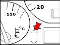
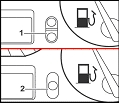

Only cars from year model 1996 equipped with 1Y or AEF engine. If service is due will “OEL”, “INSP-1” or “INSP-2” be shown in place of the mileage during approx. 2 seconds after the ignition has been turned on. If no service is necessary “IN 00” will be displayed.
Cancelling
The instrument service memory includes four different status:
“IN 00” – no service needed
“OEL” – Oil service
“INSP-1” – Inspection service every 12 months
“INSP-2” – Inspection service every 30 000 km
If inspection service “INSP-2” has been arranged must “INSP-2”, “INSP-1” and “OEL” be cancelled.
If inspection service “INSP-1” has been arranged must “INSP-1” and “OEL” be cancelled.
Ignition on
Press and hold the button below the speedometer (see fig 1)

fig.1
Ignition off
Release the button below the speedometer
Present service is now shown in the display. Press and hold button nr 1 (lower edge) or button nr 2 (see fig 2, depending of instrument version) until five dashes are shown in the display, present service is now cancelled.

fig. 2
Press the button below the speedometer (see fig 1) to bring out the next service. Start from step 5 again.
Ignition on, observe “IN 00” in the display, ignition off.